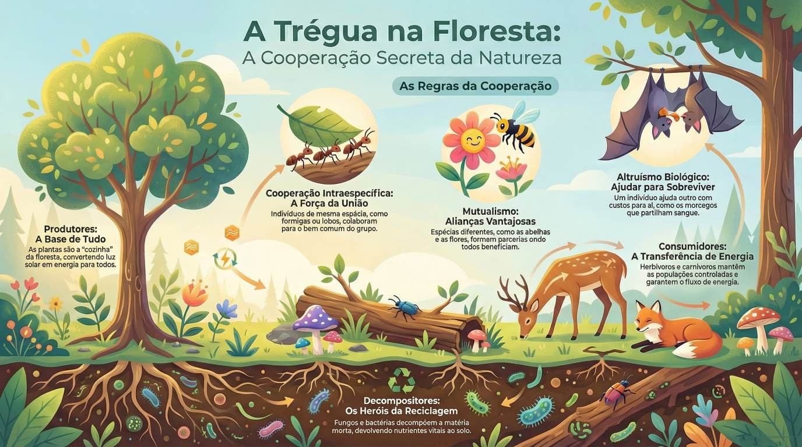

Ecologia & A Teia da Vida
Explorando a Magia e o Equilíbrio da Natureza
Sala de Estudo
Galeria Multimédia
Flashcards
Glossário
Aprendizagem Ativa

Referência: Infografia Florestal
Recursos Multimédia
Flashcards de Revisão
Glossário de Termos
Atividades de Aprendizagem
Simulador
Iniciar Questionário
Minijogo de Associação
Os Desafios Ecológicos
0